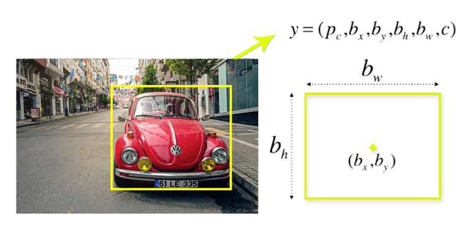
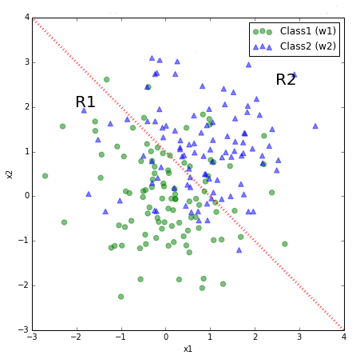
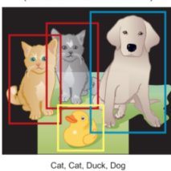

Welcome to the AI-ML Workshop
Decrypting the AI-ML hype and how artificial intelligence is reshaping the World!
Series of workshop hosted by TechConverge, SVNIT.
What is Machine Learning?
Definitions of ML
-
Field of study that gives computers the ability to learn without being explicitly programmed
Definitions of ML
-
Field of study that gives computers the ability to learn without being explicitly programmed
-
A computer program is said to learn from experience E with respect to some task T and some performance measure P, if its performance on T, as measured by P, improves with experience E.
Q. How all has this even become possible?
Ans: Data
Exponential growth of DATA
-
This era of Information therefore has enhanced engagement in this information exchange.
-
All this activity is resulting in tons of data being pumped out — Big Data
When Big Data meets Machine Learning the models flourish!!
-
Data is cheap nowadays at least relatively; Knowledge is harder to come by.
-
From data we are able to derive value from large, heterogeneous and disparate sources of data at lightning speed and scale.
-
ML helps to turn data into knowledge.
Type of Machine Learning
This is how machine learn Supervised!!?
-

Train
-

Test
-

Validation
.png)
This is how machine learn Supervised!!? (Formal way)
Given (X, Y), find the mapping between Y → X
We wanted to predict price of a house, give some features of a house.
edited.png)
This is how machine learn Supervised!!? (Formal way)
Given (X, Y), find the mapping between Y → X
We wanted to predict price of a house, give some features of a house.
With the help of this line we can predict Y given X
Here Y is a label
Regression vs. Classification
edited.png)
Regression
Prediction output belongs to the set of Real No.
Prediction output is continuous in nature.
Regression vs. Classification
Regression vs. Classification

Classification
Prediction output belongs to the set of discrete No. like here we have two classes. output will be either 1 or 2
Prediction output is a class.
Regression vs. Classification
Unsupervised way